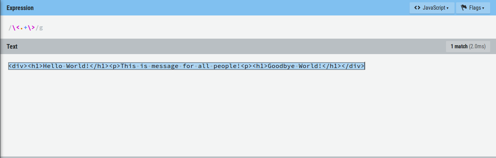
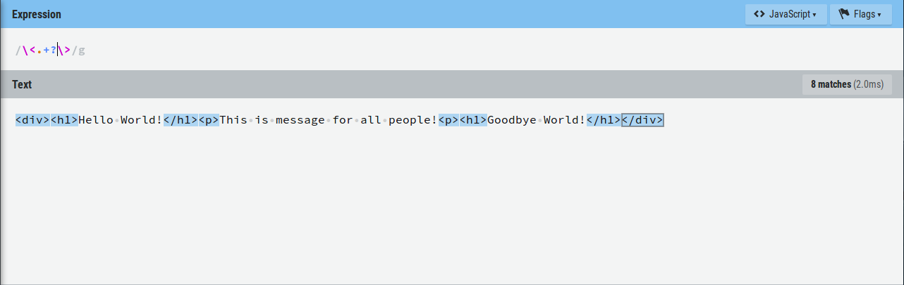
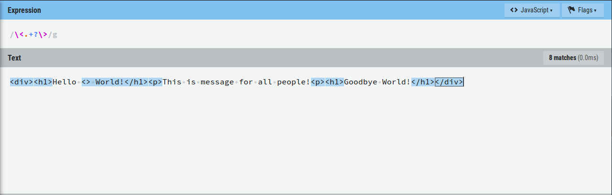
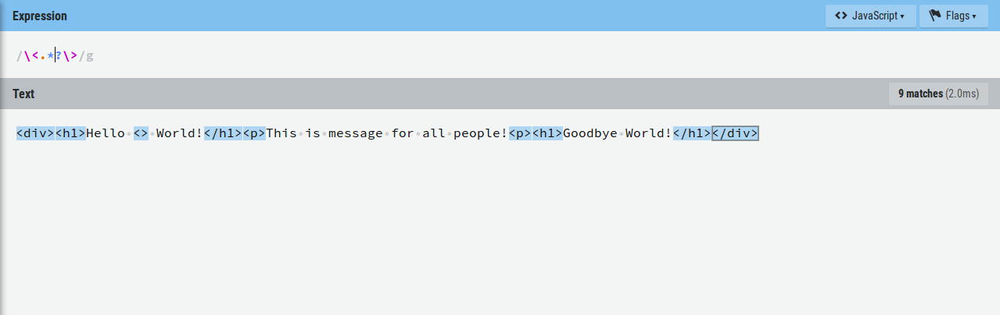
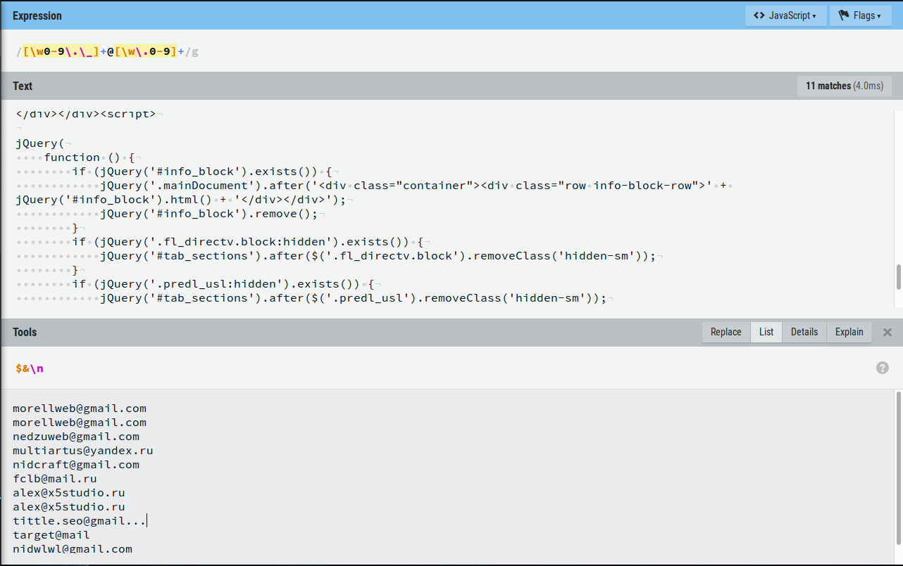
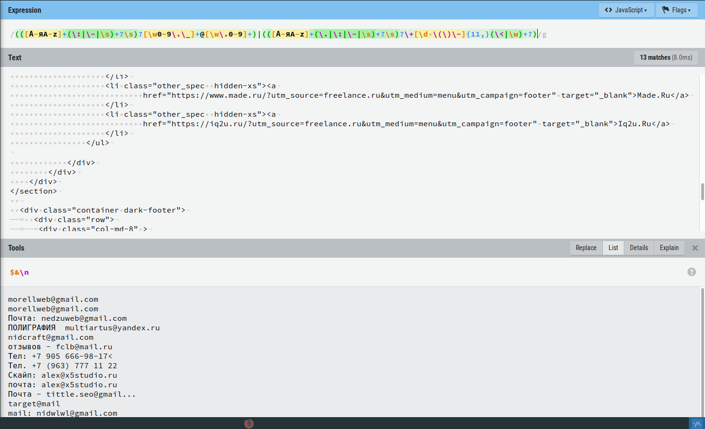
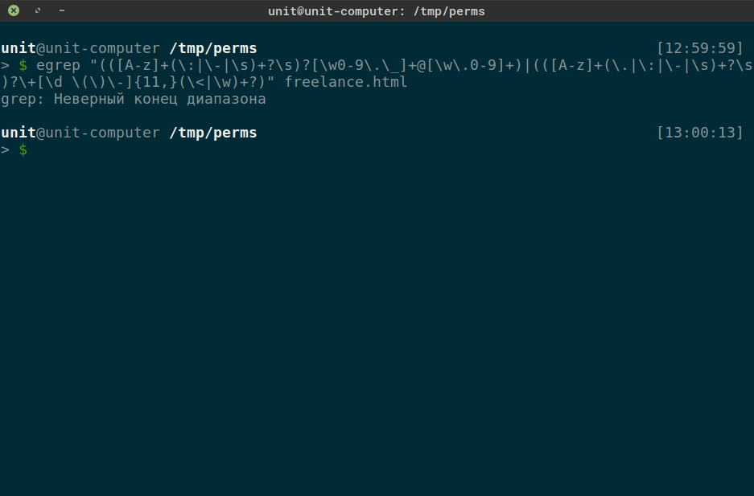
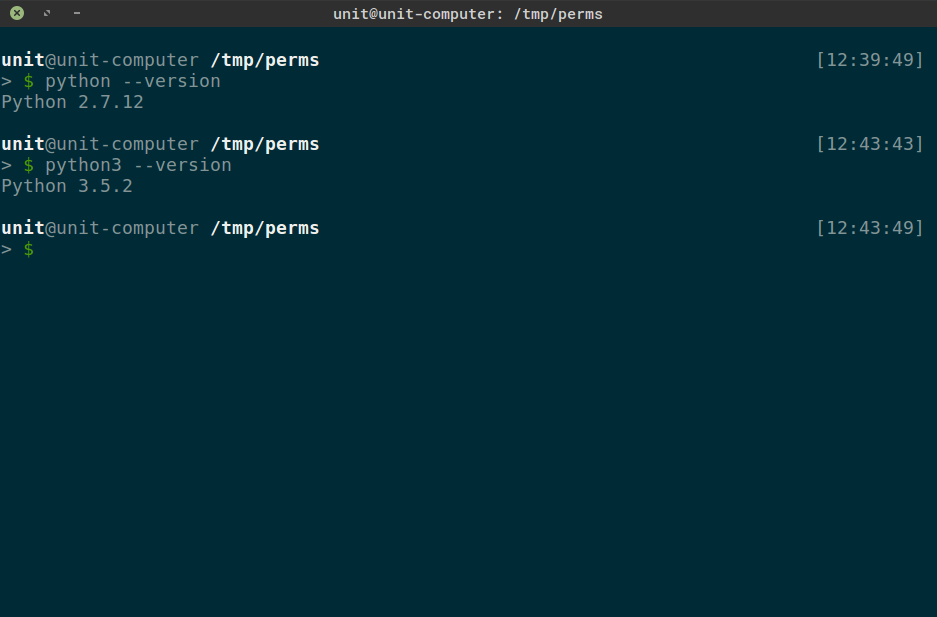
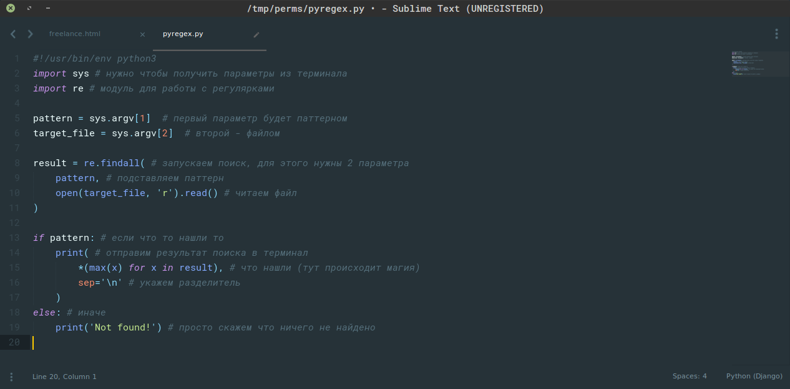

Как уже говорилось при поиске, копировании, перемещении, etc можно использовать маски. Например гифки для своих статей я делаю через утилиту "convert". Если мне нужно сконвертировать файлы из директории "frames", в которой лежат файлы: pic1.png, pic2.png, pic3.png, pic4.png, pic5.png, pic.png, 1.png, file.txt, и мне нужны только picN.png где N от 1 до 4, то:
Вот только этого не всегда достаточно, если бы один из файлов назывался бы piC4.png, то он не был бы включен в результирующую гифку или не был бы скопирован или найден и etc. Когда требуется гибкость, то используются регулярные выражения.
Регулярные выражения
Регулярные выражения - формальный язык поиска и осуществления манипуляций с подстроками в тексте, основанный на использовании метасимволов. Для поиска используется строка-образец (pattern), состоящая из символов и метасимволов и задающая правило поиска. Для манипуляций с текстом дополнительно задаётся строка замены, которая также может содержать в себе специальные символы. (Wiki)
Синтаксис регулярных выражений
Регулярки (регекспы, regexp, regular expression) являются регистрозависимыми. Строка "hello" - это уже регулярка, которой соответствует только одна строка - "hello" и не соответствуют: "Hello", "helLo", etc. Также при составлении регулярного выражения применяются спецсимволы (или метасимволы): . ^ $ * + ? { } [ ] \ | ( ) < > :. Поэтому если требуется найти спец символ, то он должен быть экранирован с помощью "\". А еще есть предопределенные соответствия, что-то типо шоткатов:
\d- Соответствует любой цифре; эквивалент класса[0-9].\D- Соответствует любому нечисловому символу; эквивалент класса[^0-9].\s- Соответствует любому символу whitespace; эквивалент[ \t\n\r\f\v].\S- Соответствует любому не-whitespace символу; эквивалент[^ \t\n\r\f\v].\w- Соответствует любой букве или цифре; эквивалент[a-zA-Z0-9_].\W- Наоборот; эквивалент[^a-zA-Z0-9_].
Итак, начнем с простого, с перечислений. Перечисления заключаются в [] между которыми указывается набор символов один из которых должен быть в строке. Например в результате команды "split" мы получаем файлы с меняющимися индексами: chunkaa, chankab, etc. Таким образом (если у нас не больше 28-ми кусков) мы можем найти их все с помощью такого регулярного выражения: chunka[abcdefghi.......короче весь алфавит]. Если у тебя хватит терпения закончить весь алфавит, то получится то что нужно. Таким образом процессор регулярных выражений будет искать все, что начинается со строки "chunka" + один символ из набора. Правда когда нужно указать алфавит, то можно поступить иначе, указать диапазон: a-z. Получается: chunka[a-z]. Как просто, правда? А если в последней букве может быть другой регистр? Тогда: chunka[A-z], что будет равно chunka[a-zA-Z]. Тоже самое и с цифрами: [0-9]. Еще можно указывать не полный диапазон, а его срез, например [1-4]. Также в наборе может быть несолько диапазонов и перечислений: chunka[a-cDg0-3]. Т.е. на месте последней буквы нашего регулярного выражения может быть любой символ из [abcDg0123] (порядок, кстати, не важен).
Открой сайт RegExr и пробуй там. Ты можешь заметить в строке ввода регулярки на сайте в начале и в конце "/". Это потому что регулярные выражения пришли в наш мир из языка программирования Perl, а в перле начало и конец регулярного выражения обозначается "/", а мезанизм поиска с помощью регулярок встроен в язык. Есть еще рожденный в грехе язык программировани PHP в котором при написании регекспа нужно на концах указать любые спец символы которые не будут использованы в самом выражении идиотизм.
Описание значений метасимволов:
- . - обозначает любой символ (кроме символа перевода строки!).
- ^ - указатель на начало потока данных, в [] используется для исключения символов из поиска.
- $ - указатель на конец потока данных.
- * - повторяющий символ, означающий ничего или много.
- + - 1 или много.
- ? - 0 или 1 и определяет жадность.
- {} - определяет диапазон повторений.
- [] - указывает набор.
- \ - экранирование.
- | - логическое ИЛИ.
- () - неименнованная группировка.
- <> - именнованная группировка.
Регулярные выражения могут быть жадными и нежадными.
<div><h1>Hello World!</h1><p>This is message for all people!<p></div>
Попробуем найти все теги в этом тексте. Если мы напишем такую регулярку
то она съест все от первого символа "<" до последнего ">", это и есть жадное регулярное выражение. Символ ">" ищется самый последний.

Чтобы умерить аппетиты регулярки используется символ "?". Т.е. чтобы найти именно теги надо после "+" написать "?"
Отлично! Вот только не все так просто, если кто то решил написать в тексте "<>", то получится следующее

Потому что ".+" говорит, что любой символ, а символ ">" тоже к ним относится, должен повторяться 1 или более раз. Таким образом строка "<> Any text>" попадет под наше условие из-за того, что между первыми скобками нет ничего. Чтобы решить это нужно заменить символ повторения на "*".

Хорошо, а что если тебе понадобится найти текст между тегами? Тогда регулярное выражение может быть таким:
Тут жадность не важна потому, что мы задали набор из букв, пробела и восклицательного знака.
Хорошо. А что если мы ищем строки только определенной длины? Например длина строки может быть от 4-х до 5-ти символов. Тогда нужно указать интервал в {} через запятую.
А если нужны слова?
Также кол-во повторений можно задавать так: {4} -равно 4-м, {4,} - от 4-х и больше, {,4} - не больше 4-х.
Пример посерьезнее, возьмем главную страницу сайта "https://freelance.ru/" и попробуем найти там email адреса. Исходный код можно посмотреть через ПКМ -> Исходный код страницы.
Пишем регулярку! Мы знаем, что в email адресе в качесвте имени пользователя могут быть: цифры, буквы, знак подчеркивания и точка; все это может повторяться. В качестве разделителя идет символ "@". В домене могут быть: цифры, буквы, точка. Тогда регулярка будет такой:
И результат:

Также можно собрать мета информацию о контакте и поискать номера телефонов, например.

Разберемся что я тут написал:
Делится все по скобкам и получается что у нас 2 регулярных выражения объединеных с помощью "|" в один:
В первом и втором регулярках тоже есть группировка, первая часть обеих регулярок повторяется:
Эта часть заключена в скобки чтобы в конце поставить знак "?" (это называется группированием). И работать это будет так, если соответствие этому регулярному выражению найдено, то оно берется в результат, иначе просто игнорируется. Расчленим его и посмотрим на куски:
- [А-яA-z]+ - Будет сопоставляться кириллица и латинница, "+" - так как должна быть либо буква либо несколько букв которые идут до выражения ниже
- (\:|\-|\s)+?\s - здесь объединяется группа символов разделителей, ведь описание контакта как то отделяется от самого контакта. Это может быть один символ из: : - \s. Вконце стоит "+", что значит символы могут повториться и "?" чтобы не жадничал. завершается все символом "\s". Все это нужно чтобы соответствовать: Тел. {data}, Email - {data}, Email: {data}.
С первой частью разобрались. Теперь разберемся со второй частью второй регулярки:
Номера телефонов начинаются с "+" поэтому и регулярка начинается также. Дальше идет группировка: цифры ( ) -; и все это может повторяться не менее 11-ти раз. Завершает номер телефона либо буква (начало другого слова), либо начало html тега.
Глаза можно выколоть смотря и составляя такие сложные регулярные выражения, да? Тогда вот посмотри на регулярное выражение проверяющее валидность email адреса по стандартам RFC.
RFC 822
(?:(?:\r\n)?[ \t])*(?:(?:(?:[^()<>@,;:\\".\[\] \000-\031]+(?:(?:(?:\r\n)?[ \t]
)+|\Z|(?=[\["()<>@,;:\\".\[\]]))|"(?:[^\"\r\\]|\\.|(?:(?:\r\n)?[ \t]))*"(?:(?:
\r\n)?[ \t])*)(?:\.(?:(?:\r\n)?[ \t])*(?:[^()<>@,;:\\".\[\] \000-\031]+(?:(?:(
?:\r\n)?[ \t])+|\Z|(?=[\["()<>@,;:\\".\[\]]))|"(?:[^\"\r\\]|\\.|(?:(?:\r\n)?[
\t]))*"(?:(?:\r\n)?[ \t])*))*@(?:(?:\r\n)?[ \t])*(?:[^()<>@,;:\\".\[\] \000-\0
31]+(?:(?:(?:\r\n)?[ \t])+|\Z|(?=[\["()<>@,;:\\".\[\]]))|\[([^\[\]\r\\]|\\.)*\
](?:(?:\r\n)?[ \t])*)(?:\.(?:(?:\r\n)?[ \t])*(?:[^()<>@,;:\\".\[\] \000-\031]+
(?:(?:(?:\r\n)?[ \t])+|\Z|(?=[\["()<>@,;:\\".\[\]]))|\[([^\[\]\r\\]|\\.)*\](?:
(?:\r\n)?[ \t])*))*|(?:[^()<>@,;:\\".\[\] \000-\031]+(?:(?:(?:\r\n)?[ \t])+|\Z
|(?=[\["()<>@,;:\\".\[\]]))|"(?:[^\"\r\\]|\\.|(?:(?:\r\n)?[ \t]))*"(?:(?:\r\n)
?[ \t])*)*\<(?:(?:\r\n)?[ \t])*(?:@(?:[^()<>@,;:\\".\[\] \000-\031]+(?:(?:(?:\
r\n)?[ \t])+|\Z|(?=[\["()<>@,;:\\".\[\]]))|\[([^\[\]\r\\]|\\.)*\](?:(?:\r\n)?[
\t])*)(?:\.(?:(?:\r\n)?[ \t])*(?:[^()<>@,;:\\".\[\] \000-\031]+(?:(?:(?:\r\n)
?[ \t])+|\Z|(?=[\["()<>@,;:\\".\[\]]))|\[([^\[\]\r\\]|\\.)*\](?:(?:\r\n)?[ \t]
)*))*(?:,@(?:(?:\r\n)?[ \t])*(?:[^()<>@,;:\\".\[\] \000-\031]+(?:(?:(?:\r\n)?[
\t])+|\Z|(?=[\["()<>@,;:\\".\[\]]))|\[([^\[\]\r\\]|\\.)*\](?:(?:\r\n)?[ \t])*
)(?:\.(?:(?:\r\n)?[ \t])*(?:[^()<>@,;:\\".\[\] \000-\031]+(?:(?:(?:\r\n)?[ \t]
)+|\Z|(?=[\["()<>@,;:\\".\[\]]))|\[([^\[\]\r\\]|\\.)*\](?:(?:\r\n)?[ \t])*))*)
*:(?:(?:\r\n)?[ \t])*)?(?:[^()<>@,;:\\".\[\] \000-\031]+(?:(?:(?:\r\n)?[ \t])+
|\Z|(?=[\["()<>@,;:\\".\[\]]))|"(?:[^\"\r\\]|\\.|(?:(?:\r\n)?[ \t]))*"(?:(?:\r
\n)?[ \t])*)(?:\.(?:(?:\r\n)?[ \t])*(?:[^()<>@,;:\\".\[\] \000-\031]+(?:(?:(?:
\r\n)?[ \t])+|\Z|(?=[\["()<>@,;:\\".\[\]]))|"(?:[^\"\r\\]|\\.|(?:(?:\r\n)?[ \t
]))*"(?:(?:\r\n)?[ \t])*))*@(?:(?:\r\n)?[ \t])*(?:[^()<>@,;:\\".\[\] \000-\031
]+(?:(?:(?:\r\n)?[ \t])+|\Z|(?=[\["()<>@,;:\\".\[\]]))|\[([^\[\]\r\\]|\\.)*\](
?:(?:\r\n)?[ \t])*)(?:\.(?:(?:\r\n)?[ \t])*(?:[^()<>@,;:\\".\[\] \000-\031]+(?
:(?:(?:\r\n)?[ \t])+|\Z|(?=[\["()<>@,;:\\".\[\]]))|\[([^\[\]\r\\]|\\.)*\](?:(?
:\r\n)?[ \t])*))*\>(?:(?:\r\n)?[ \t])*)|(?:[^()<>@,;:\\".\[\] \000-\031]+(?:(?
:(?:\r\n)?[ \t])+|\Z|(?=[\["()<>@,;:\\".\[\]]))|"(?:[^\"\r\\]|\\.|(?:(?:\r\n)?
[ \t]))*"(?:(?:\r\n)?[ \t])*)*:(?:(?:\r\n)?[ \t])*(?:(?:(?:[^()<>@,;:\\".\[\]
\000-\031]+(?:(?:(?:\r\n)?[ \t])+|\Z|(?=[\["()<>@,;:\\".\[\]]))|"(?:[^\"\r\\]|
\\.|(?:(?:\r\n)?[ \t]))*"(?:(?:\r\n)?[ \t])*)(?:\.(?:(?:\r\n)?[ \t])*(?:[^()<>
@,;:\\".\[\] \000-\031]+(?:(?:(?:\r\n)?[ \t])+|\Z|(?=[\["()<>@,;:\\".\[\]]))|"
(?:[^\"\r\\]|\\.|(?:(?:\r\n)?[ \t]))*"(?:(?:\r\n)?[ \t])*))*@(?:(?:\r\n)?[ \t]
)*(?:[^()<>@,;:\\".\[\] \000-\031]+(?:(?:(?:\r\n)?[ \t])+|\Z|(?=[\["()<>@,;:\\
".\[\]]))|\[([^\[\]\r\\]|\\.)*\](?:(?:\r\n)?[ \t])*)(?:\.(?:(?:\r\n)?[ \t])*(?
:[^()<>@,;:\\".\[\] \000-\031]+(?:(?:(?:\r\n)?[ \t])+|\Z|(?=[\["()<>@,;:\\".\[
\]]))|\[([^\[\]\r\\]|\\.)*\](?:(?:\r\n)?[ \t])*))*|(?:[^()<>@,;:\\".\[\] \000-
\031]+(?:(?:(?:\r\n)?[ \t])+|\Z|(?=[\["()<>@,;:\\".\[\]]))|"(?:[^\"\r\\]|\\.|(
?:(?:\r\n)?[ \t]))*"(?:(?:\r\n)?[ \t])*)*\<(?:(?:\r\n)?[ \t])*(?:@(?:[^()<>@,;
:\\".\[\] \000-\031]+(?:(?:(?:\r\n)?[ \t])+|\Z|(?=[\["()<>@,;:\\".\[\]]))|\[([
^\[\]\r\\]|\\.)*\](?:(?:\r\n)?[ \t])*)(?:\.(?:(?:\r\n)?[ \t])*(?:[^()<>@,;:\\"
.\[\] \000-\031]+(?:(?:(?:\r\n)?[ \t])+|\Z|(?=[\["()<>@,;:\\".\[\]]))|\[([^\[\
]\r\\]|\\.)*\](?:(?:\r\n)?[ \t])*))*(?:,@(?:(?:\r\n)?[ \t])*(?:[^()<>@,;:\\".\
[\] \000-\031]+(?:(?:(?:\r\n)?[ \t])+|\Z|(?=[\["()<>@,;:\\".\[\]]))|\[([^\[\]\
r\\]|\\.)*\](?:(?:\r\n)?[ \t])*)(?:\.(?:(?:\r\n)?[ \t])*(?:[^()<>@,;:\\".\[\]
\000-\031]+(?:(?:(?:\r\n)?[ \t])+|\Z|(?=[\["()<>@,;:\\".\[\]]))|\[([^\[\]\r\\]
|\\.)*\](?:(?:\r\n)?[ \t])*))*)*:(?:(?:\r\n)?[ \t])*)?(?:[^()<>@,;:\\".\[\] \0
00-\031]+(?:(?:(?:\r\n)?[ \t])+|\Z|(?=[\["()<>@,;:\\".\[\]]))|"(?:[^\"\r\\]|\\
.|(?:(?:\r\n)?[ \t]))*"(?:(?:\r\n)?[ \t])*)(?:\.(?:(?:\r\n)?[ \t])*(?:[^()<>@,
;:\\".\[\] \000-\031]+(?:(?:(?:\r\n)?[ \t])+|\Z|(?=[\["()<>@,;:\\".\[\]]))|"(?
:[^\"\r\\]|\\.|(?:(?:\r\n)?[ \t]))*"(?:(?:\r\n)?[ \t])*))*@(?:(?:\r\n)?[ \t])*
(?:[^()<>@,;:\\".\[\] \000-\031]+(?:(?:(?:\r\n)?[ \t])+|\Z|(?=[\["()<>@,;:\\".
\[\]]))|\[([^\[\]\r\\]|\\.)*\](?:(?:\r\n)?[ \t])*)(?:\.(?:(?:\r\n)?[ \t])*(?:[
^()<>@,;:\\".\[\] \000-\031]+(?:(?:(?:\r\n)?[ \t])+|\Z|(?=[\["()<>@,;:\\".\[\]
]))|\[([^\[\]\r\\]|\\.)*\](?:(?:\r\n)?[ \t])*))*\>(?:(?:\r\n)?[ \t])*)(?:,\s*(
?:(?:[^()<>@,;:\\".\[\] \000-\031]+(?:(?:(?:\r\n)?[ \t])+|\Z|(?=[\["()<>@,;:\\
".\[\]]))|"(?:[^\"\r\\]|\\.|(?:(?:\r\n)?[ \t]))*"(?:(?:\r\n)?[ \t])*)(?:\.(?:(
?:\r\n)?[ \t])*(?:[^()<>@,;:\\".\[\] \000-\031]+(?:(?:(?:\r\n)?[ \t])+|\Z|(?=[
\["()<>@,;:\\".\[\]]))|"(?:[^\"\r\\]|\\.|(?:(?:\r\n)?[ \t]))*"(?:(?:\r\n)?[ \t
])*))*@(?:(?:\r\n)?[ \t])*(?:[^()<>@,;:\\".\[\] \000-\031]+(?:(?:(?:\r\n)?[ \t
])+|\Z|(?=[\["()<>@,;:\\".\[\]]))|\[([^\[\]\r\\]|\\.)*\](?:(?:\r\n)?[ \t])*)(?
:\.(?:(?:\r\n)?[ \t])*(?:[^()<>@,;:\\".\[\] \000-\031]+(?:(?:(?:\r\n)?[ \t])+|
\Z|(?=[\["()<>@,;:\\".\[\]]))|\[([^\[\]\r\\]|\\.)*\](?:(?:\r\n)?[ \t])*))*|(?:
[^()<>@,;:\\".\[\] \000-\031]+(?:(?:(?:\r\n)?[ \t])+|\Z|(?=[\["()<>@,;:\\".\[\
]]))|"(?:[^\"\r\\]|\\.|(?:(?:\r\n)?[ \t]))*"(?:(?:\r\n)?[ \t])*)*\<(?:(?:\r\n)
?[ \t])*(?:@(?:[^()<>@,;:\\".\[\] \000-\031]+(?:(?:(?:\r\n)?[ \t])+|\Z|(?=[\["
()<>@,;:\\".\[\]]))|\[([^\[\]\r\\]|\\.)*\](?:(?:\r\n)?[ \t])*)(?:\.(?:(?:\r\n)
?[ \t])*(?:[^()<>@,;:\\".\[\] \000-\031]+(?:(?:(?:\r\n)?[ \t])+|\Z|(?=[\["()<>
@,;:\\".\[\]]))|\[([^\[\]\r\\]|\\.)*\](?:(?:\r\n)?[ \t])*))*(?:,@(?:(?:\r\n)?[
\t])*(?:[^()<>@,;:\\".\[\] \000-\031]+(?:(?:(?:\r\n)?[ \t])+|\Z|(?=[\["()<>@,
;:\\".\[\]]))|\[([^\[\]\r\\]|\\.)*\](?:(?:\r\n)?[ \t])*)(?:\.(?:(?:\r\n)?[ \t]
)*(?:[^()<>@,;:\\".\[\] \000-\031]+(?:(?:(?:\r\n)?[ \t])+|\Z|(?=[\["()<>@,;:\\
".\[\]]))|\[([^\[\]\r\\]|\\.)*\](?:(?:\r\n)?[ \t])*))*)*:(?:(?:\r\n)?[ \t])*)?
(?:[^()<>@,;:\\".\[\] \000-\031]+(?:(?:(?:\r\n)?[ \t])+|\Z|(?=[\["()<>@,;:\\".
\[\]]))|"(?:[^\"\r\\]|\\.|(?:(?:\r\n)?[ \t]))*"(?:(?:\r\n)?[ \t])*)(?:\.(?:(?:
\r\n)?[ \t])*(?:[^()<>@,;:\\".\[\] \000-\031]+(?:(?:(?:\r\n)?[ \t])+|\Z|(?=[\[
"()<>@,;:\\".\[\]]))|"(?:[^\"\r\\]|\\.|(?:(?:\r\n)?[ \t]))*"(?:(?:\r\n)?[ \t])
*))*@(?:(?:\r\n)?[ \t])*(?:[^()<>@,;:\\".\[\] \000-\031]+(?:(?:(?:\r\n)?[ \t])
+|\Z|(?=[\["()<>@,;:\\".\[\]]))|\[([^\[\]\r\\]|\\.)*\](?:(?:\r\n)?[ \t])*)(?:\
.(?:(?:\r\n)?[ \t])*(?:[^()<>@,;:\\".\[\] \000-\031]+(?:(?:(?:\r\n)?[ \t])+|\Z
|(?=[\["()<>@,;:\\".\[\]]))|\[([^\[\]\r\\]|\\.)*\](?:(?:\r\n)?[ \t])*))*\>(?:(
?:\r\n)?[ \t])*))*)?;\s*)
RFC 5322
\A(?:[a-z0-9!#$%&'*+/=?^_`{|}~-]+(?:\.[a-z0-9!#$%&'*+/=?^_`{|}~-]+)*
| "(?:[\x01-\x08\x0b\x0c\x0e-\x1f\x21\x23-\x5b\x5d-\x7f]
| \\[\x01-\x09\x0b\x0c\x0e-\x7f])*")
@ (?:(?:[a-z0-9](?:[a-z0-9-]*[a-z0-9])?\.)+[a-z0-9](?:[a-z0-9-]*[a-z0-9])?
| \[(?:(?:25[0-5]|2[0-4][0-9]|[01]?[0-9][0-9]?)\.){3}
(?:25[0-5]|2[0-4][0-9]|[01]?[0-9][0-9]?|[a-z0-9-]*[a-z0-9]:
(?:[\x01-\x08\x0b\x0c\x0e-\x1f\x21-\x5a\x53-\x7f]
| \\[\x01-\x09\x0b\x0c\x0e-\x7f])+)
\])\z
Применение регулярных выражений
Теория без практики мертва. В линукс есть замечательный инструмент "egrep", который позволяет искать файлы используя синтаксис регулярных выражений. Искать можно в файлах (также рекурсивно) и передавая информацию на стандартный поток ввода. Крайне удобно применять egrep при поиске процессов. Команда "ps" выводит информацию о процессах в системе.
Процессов очень много, тогда если нас интересуют все процессы используеющие Python можно сделать так:
Стоит учесть что egrep будет искать соответствие регулярному выражению во всей строке это значит, что процессы
будут таже показаны в выводе. Чтобы это исправить читайте справку по "ps" или составляйте более точные регулярки.
Есть одна особенность использования grep (egrep аналогичная утилита только использует расширенный синтаксис по умолчанию запускаясь с флагом -e) зависимость от системной локали. Например на моей системе те регулярки, что я писал под код сайта флиланса уже не работют. Поэтому научимся применять пайтон при решении подобных задачь.

Python regex
Python - это высокоуровневый интерпретируемый язык программирования общего назначения. Большего знать сейчас и не надо. По умолчанию присутствует в подавляющем числе дистрибутивов линукс, исключение составляют сборки под микроконтроллеры раве что, например его может не быть в роутерах. На данный момент дистрибутивы для десктопа распространяются с двумя версиями этого языка: 2.7 и 3.5.

В качестве редактора я использую SublimeText 3, ты можешь пользоваться любым текстовым редактором, хоть nano.
Вот такой простой скрипт:

И запустим:

Ничего сложного :-)
Немного о синтаксисе "./file". Думаю тебе понятно, что это указание полного пути к файлу. Первая строка в самом файле "#!/usr/bin/env python3" определяет, что будет запущено при таком подходе. Т.е. будет запущена утилита env которая в качестве параметра получит "python3" и запустит его. Это нужно чтобы не писать полный путь к интерпретатору, который может лежать где угодно. "./file" это способ относительного запуска исполняемых файлов. Думаю объяснения уже излишни.
Порой лучший способ что то понять, взять и попробовать!